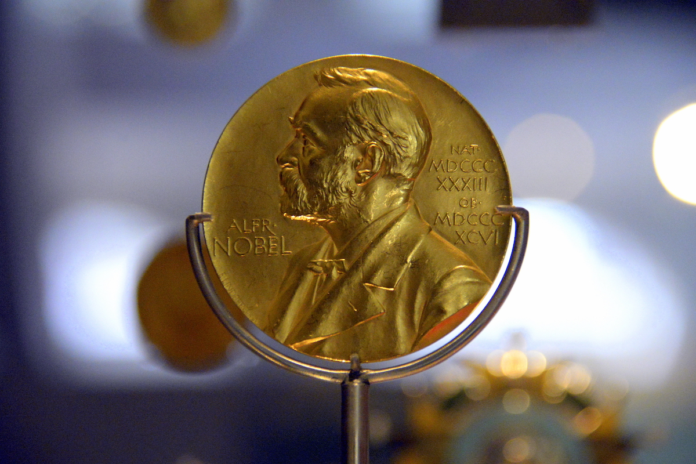

civilisation

nobel
t2
Le terme civilisation — dérivé indirectement du latin civis — a été utilisé de différentes manières au cours de l'histoire.
Dans l'acception historique et sociologique actuelle, la civilisation est l'ensemble des traits qui caractérisent l'état d'une société donnée, du point de vue technique, intellectuel, politique et moral, sans porter de jugement de valeur. On peut alors parler de civilisations au pluriel et même de « civilisations primitives », au sens chronologique, sans connotation péjorative.
Comme les mots culture, religion et société, le mot civilisation a acquis un poids politique et idéologique déterminant, au point de devenir un concept clé ou un « maître-mot » pour penser le monde et l'histoire à l'époque des Lumières5. Le premier à avoir employé le mot civilisation dans l'acception actuelle est Victor Riqueti de Mirabeau, le père de Mirabeau le révolutionnaire5..
En 1756, dans L'Ami des Hommes ou Traité de la population, il écrit : « La religion est sans contredit le premier et le plus utile frein de l'humanité : c'est le premier ressort de la civilisation6. » De façon similaire, en 1795, dans Esquisse d’un tableau historique des progrès de l’esprit humain de Condorcet, l'idée de civilisation désigne les progrès accomplis par l'humanité dans une nation donnée lorsqu'il fut possible de passer de l'état de barbarie à celui de civilisé7.
Au XIXe siècle la civilisation, alors envisagée comme un idéal à atteindre et comme un processus de transformation de la société vers cet idéal, fut la principale légitimation donnée à la colonisation impérialiste8,9. Il s'agissait de « civiliser » les peuples du monde dans une vision hiérarchique et évolutionniste de la civilisation. Ainsi, la supériorité technique et militaire des pays colonisateurs servit de preuve de la supériorité d'une civilisation dite « occidentale », sur les autres civilisations considérées comme primitives ou barbares. Cette supériorité civilisationnelle légitimait à son tour la conquête du reste du monde par les pays « chrétiens » (catholiques et protestants), qui se voyaient comme les seuls à même d'éclairer les peuples inférieurs et de les tirer hors de la barbarie de leurs civilisations respectives.
Aujourd'hui les conceptions de la civilisation sont plus égalitaires et débarrassées des conceptions racialistes qui entretenaient une hiérarchisation des civilisations et leur confusion avec les aires religieuses, de sorte que le terme désigne davantage un état de fait historique et social qu'un processus de transformation, d'évolution et de maturation des sociétés. L'idée a cessé de fonctionner en opposition avec celles de barbarie ou de sauvagerie, tandis qu'est affirmé le principe du « droit des peuples à disposer d'eux-mêmes »10.
avec la décolonisation progressive du monde. En outre, la diffusion des méthodes scientifiques à travers le monde permet aux peuples anciennement colonisés de se réapproprier progressivement leurs histoires et leurs cultures respectives, favorisant ainsi le dialogue entre « civilisations » et leur étude réciproque grâce à cette base méthodologique commune.
Pour pouvoir définir des civilisations qui n'ont ni structure précise ni représentation institutionnelle, il faut sélectionner les faits que l'on juge appropriés. Ainsi, on se fonde sur des faits linguistiques, éthiques, géographiques, culturels, religieux, historiques ou politiques. Mais les concepts de religion ou de culture, sont eux-mêmes discutés, ainsi que leur pertinence pour caractériser l'état d'une civilisation. La notion de civilisation.
, au singulier ou au pluriel, reste donc encore confuse et difficile à définir..
Ainsi, pour Bertrand Binoche, « Après avoir prédit le triomphe de la civilisation, on peut bien annoncer le choc des civilisations, mais cela ne contribue pas à y voir plus clair »5.
t1
Le terme civilisation — dérivé indirectement du latin civis — a été utilisé de différentes manières au cours de l'histoire.
Dans l'acception historique et sociologique actuelle, la civilisation est l'ensemble des traits qui caractérisent l'état d'une société donnée, du point de vue technique, intellectuel, politique et moral, sans porter de jugement de valeur. On peut alors parler de civilisations au pluriel et même de « civilisations primitives », au sens chronologique, sans connotation péjorative.
Comme les mots culture, religion et société, le mot civilisation a acquis un poids politique et idéologique déterminant, au point de devenir un concept clé ou un « maître-mot » pour penser le monde et l'histoire à l'époque des Lumières5. Le premier à avoir employé le mot civilisation dans l'acception actuelle est Victor Riqueti de Mirabeau, le père de Mirabeau le révolutionnaire5..
En 1756, dans L'Ami des Hommes ou Traité de la population, il écrit : « La religion est sans contredit le premier et le plus utile frein de l'humanité : c'est le premier ressort de la civilisation6. » De façon similaire, en 1795, dans Esquisse d’un tableau historique des progrès de l’esprit humain de Condorcet, l'idée de civilisation désigne les progrès accomplis par l'humanité dans une nation donnée lorsqu'il fut possible de passer de l'état de barbarie à celui de civilisé7.
Au XIXe siècle la civilisation, alors envisagée comme un idéal à atteindre et comme un processus de transformation de la société vers cet idéal, fut la principale légitimation donnée à la colonisation impérialiste8,9. Il s'agissait de « civiliser » les peuples du monde dans une vision hiérarchique et évolutionniste de la civilisation. Ainsi, la supériorité technique et militaire des pays colonisateurs servit de preuve de la supériorité d'une civilisation dite « occidentale », sur les autres civilisations considérées comme primitives ou barbares. Cette supériorité civilisationnelle légitimait à son tour la conquête du reste du monde par les pays « chrétiens » (catholiques et protestants), qui se voyaient comme les seuls à même d'éclairer les peuples inférieurs et de les tirer hors de la barbarie de leurs civilisations respectives.
Aujourd'hui les conceptions de la civilisation sont plus égalitaires et débarrassées des conceptions racialistes qui entretenaient une hiérarchisation des civilisations et leur confusion avec les aires religieuses, de sorte que le terme désigne davantage un état de fait historique et social qu'un processus de transformation, d'évolution et de maturation des sociétés. L'idée a cessé de fonctionner en opposition avec celles de barbarie ou de sauvagerie, tandis qu'est affirmé le principe du « droit des peuples à disposer d'eux-mêmes »10.
avec la décolonisation progressive du monde. En outre, la diffusion des méthodes scientifiques à travers le monde permet aux peuples anciennement colonisés de se réapproprier progressivement leurs histoires et leurs cultures respectives, favorisant ainsi le dialogue entre « civilisations » et leur étude réciproque grâce à cette base méthodologique commune.
Pour pouvoir définir des civilisations qui n'ont ni structure précise ni représentation institutionnelle, il faut sélectionner les faits que l'on juge appropriés. Ainsi, on se fonde sur des faits linguistiques, éthiques, géographiques, culturels, religieux, historiques ou politiques. Mais les concepts de religion ou de culture, sont eux-mêmes discutés, ainsi que leur pertinence pour caractériser l'état d'une civilisation. La notion de civilisation.
, au singulier ou au pluriel, reste donc encore confuse et difficile à définir..
Ainsi, pour Bertrand Binoche, « Après avoir prédit le triomphe de la civilisation, on peut bien annoncer le choc des civilisations, mais cela ne contribue pas à y voir plus clair »5.